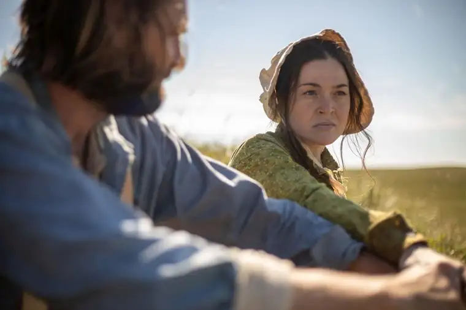
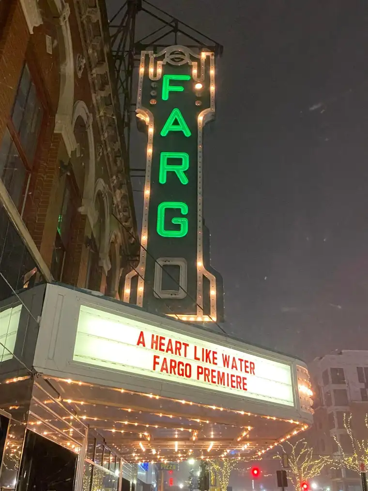
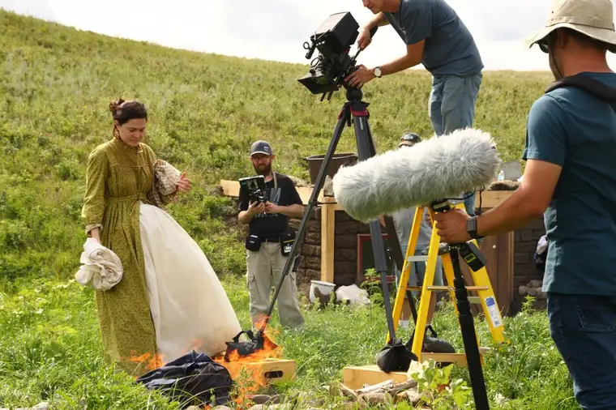
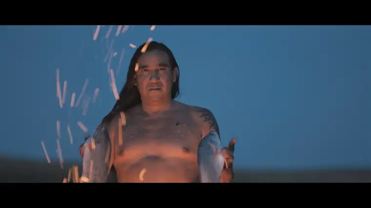
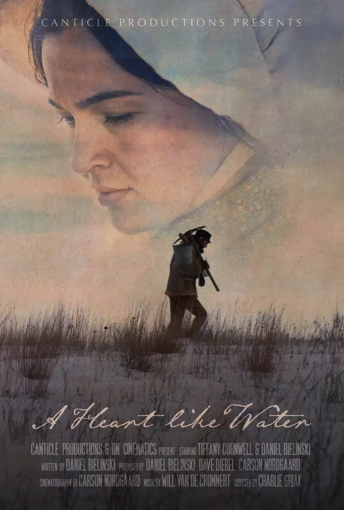

“On New Year’s Day, 1872, our baby died, but so intense was the cold that it could not be buried.”
Thus begins the chapter from historian Linda Slaughter’s “From Fortress to Farm” that provided inspiration for a new film, “A Heart Like Water,” currently premiering in North Dakota and soon available online.

Fittingly, the film’s debut, which took place Dec. 5 at the historic Fargo Theater in Fargo, N.D., coincided with the season’s first blizzard; the solid attendance despite dire weather making its theme all the more pointed: life in the Heartland can be hard, but we still show up.

The settlers in Dakota Territory in the late 19th Century did not have it easy. And though one cannot compare our modern world with its myriad conveniences to their plights, in any time in history, hardship has followed humanity.
Slaughter’s testimony plays out in the film immediately with an opening scene showing a man trying to dig a grave, futilely, with his shovel hitting against the hard, frozen earth. Later, it emerges again as the camera widens to reveal that not only one grave, but several, have been dug, each marked with a rudimentary cross made of sticks and twine.
The suffering deepens from there, but a glimmer of hope eventually emerges, peeking out first through trickles of flowing water from melting snow in the spring.
The film draws its title from Lamentations 2:19: “Rise up! Wail in the night, at the start of every watch; Pour out your heart like water before the Lord; Lift up your hands to him for the lives of your children, Who collapse from hunger at the corner of every street.”

Behind the scenes
As he shared in an earlier interview, Bielinski began his life in Wisconsin in a large Catholic family, studied theater at a Catholic university in Florida, and spent his early adult years trying to make it as an actor in New York City while pursing his master’s.
When wooed to Bismarck to direct theater at the University of Mary, Bielinski, a father of five who was growing “tired of schlepping kids up and down subways,” along with the “endless moral battle of work versus values,” took a chance on North Dakota, and soon began researching the history of his new home, founding Canticle Productions in 2018.
From his grounding comes a sensitivity toward the subtleties and tenderness of life for which our world seems to be thirsting. Though he prefers revealing Christian undertones more covertly than one often finds in many of today’s faith-based films, Bielinski said he aims to show a “rightly ordered world” in his work aided by his Catholic lens.
The 45-minute film is fairly unique in that, save some spoken Scripture passages and a sung Norwegian lullaby, it is mostly wordless.
The only other spoken words come from a Native American character, in a language few will understand, who shows up at a crucial moment in the film. When later asked what his words were conveying, actor Allen Demaray, a father of seven and member of the Three Affiliated Tribes from New Town, N.D., explained, “I was calling upon the Universe, Our Holy Father, to come have pity on this one (the mother).”

During a Q&A with Bielinski and Demaray that followed in Fargo, one viewer said the lack of dialogue enhanced the film’s impact. “You immersed us into more of an emotional (experience) than any of us came here expecting,” she remarked. “I was pleasantly surprised.”
Indeed, without words, the viewer becomes deeply drawn into the drama of life on the prairie in that era of struggle. The intimacy of camera angles in so many of the scenes makes one feel as if they, too, are in the sod house, experiencing the extreme and perilous conditions along with the characters.
“The early drafts of the script did have dialogue,” Bielinski shared, “but it quickly seemed apparent that it trivialized the suffering and sacrifice of these people,” so it was eliminated. “The only words I really want to hear when we’re viewing such great sacrifices anyway are God’s words; hence the words from the Book of Lamentations.”
Bielinski said that in studying the accounts of settlers in preparing to write the script, the theme of loneliness ran prominently through the stories. “Not only were they isolated and lonely, set apart from society and other communities being in Dakota Territory, but even within the family there was a lot of isolation.”
That “unspoken tension” comes through in the couple’s interactions in the film. “They love each other, yet they’re enduring so much suffering together,” he says. “How do you make a life together under those conditions?”
When asked the reason for making Scripture so central, Bielinski said it’s one thing to show people suffering over the course of a movie, and another to ask, “What is the context in which we are to face suffering in our own lives?” adding, “What was the Rock on which people relied on then, as well as now? I think faith was a big thing for the settlers coming in at that time…and I wanted to honor that.”
Demaray said that in his first viewing of the film recently, he was sitting next to one of his young daughters, holding her hand, and noticed tears dripping down her cheeks, as were his own. “It’s not just talking about it, but you feel (the heartache),” he said.
And yet, the ray of sunshine, too. “In the end, (the mother) had purpose again,” which she found in motherhood itself, he said. “That’s one of the most powerful things to be in this world—a mother.”
Bielinski also gave the audience a peek at his next film, “Sanctified,” scheduled to come out this spring.
Read Roxane’s newspaper article previewing the premiere here.
To learn more about “A Heart Like Water,” visit https://www.aheartlikewater.com/
